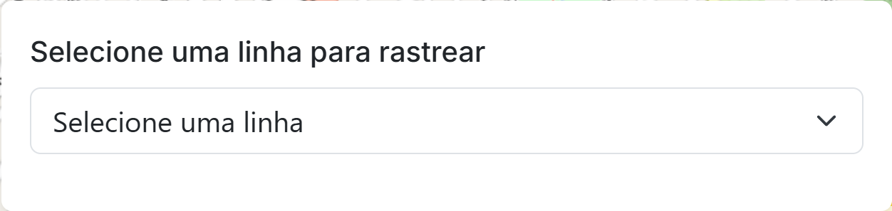

André Dias, Arthur Fernando, Davi Elias, Francisco Almeida, Frederico Santos e Gabriel Della Gaspera
Exemplo de container com Bootstrap Responsivo
...
Exemplo de container com várias classes do Bootstrap
...
Div do mapa
Criação o mapa
function criaMapa() {
map = L.map('map').setView(posUser, ZOOM_INICIAL);
L.tileLayer(
// Definição do tile layer para visualização do mapa
).addTo(map);
}

function preencherSelect(linhas) {
linhas.forEach(linha => {
select.appendChild(linha)
})
}
function desenharOnibus(data) {
apagarOnibus()
const linhaSelecionada =
document.getElementById("busLineSelect").value;
data.forEach(onibus => {
if (linhaSelecionada === "" ||
linhaSelecionada === mapaLinhas.get(onibus.LN)) {
criarMarkerDeOnibus([onibus.LT, onibus.LG])
}
});
markersOnibus.addTo(map);
}
function criarMarkerDeOnibus(pos) {
markersOnibus.addLayer(L.circleMarker(pos))
}
function login(usuario, senha) {
// Valida os dados
if (!usuario || !senha) {
return "Erro";
}
// Autentica na API externa
api.post('/auth', { user: usuario, pass: senha });
}